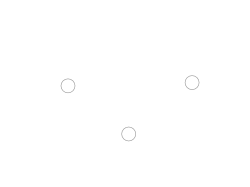
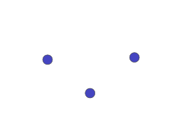
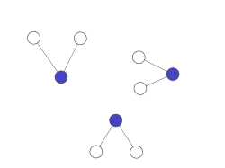
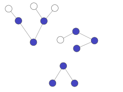
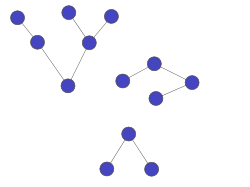
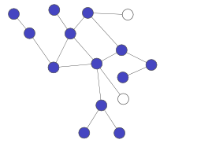
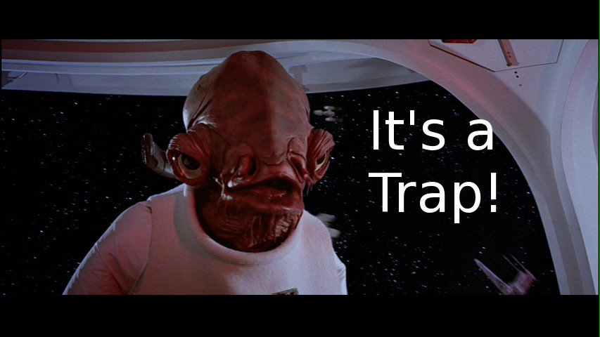
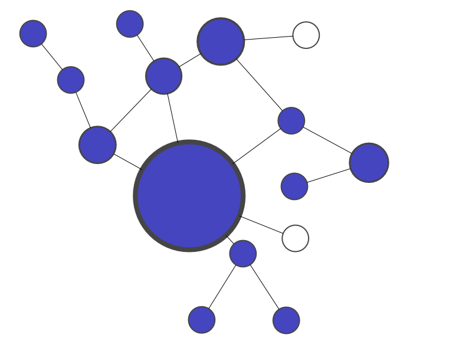

Search
Table of Contents
- 1. Search
- 2. Decentralization
- 3. Hyperlinks
- 4. Yahoo!
- 5. Search as Core Copetency
- 6. Essential Features
- 7. Crawling
- 8. Policies
- 9. Spider trap
- 10. Indexing
- 11. Search
- 12. PageRank
- 13. Random Walk
- 14. Calculation
- 15. Adjacency
- 16. Array Multiplication
- 17. Calculation
- 18. Scale Mattered
- 19. Scale Continues to Matter
1 Search
2 Decentralization
- Democratic
- Resilient
- Innovative
- But where is everything?
2.1 Trade-offs notes
- Put anything online without asking anyone…
- But how does anyone discover it?
3 Hyperlinks

3.1 What's New? notes
- Internet invisioned as moving through hyperlinks
- A single web page that listed all the new websites
- "Chess enthusiasts will be interested in the Internet Chess Library"
4 Yahoo! two_col
- "Jerry's guide to the world wide web"
- Collection of hierarchical links
- Added search, though not as core competency

4.1 History notes
- Started as Tim Breners-Lee imagined, just a series of hyperlinks
- But quickly clear that search was helpful
- But not clear it was a differentiator
4.2 Yahoo Search
- 2000 - Used Google for search
- 2002 - Inktomi purchased
- 2003 - Overture (AltaVista) purchased
- 2004 - Dropped Google, used in-house engine
4.3 Took time notes
- Yahoo, many other didn't see Search as core to product
- Search as a business was non-obvious, how to make money differentiate?
5 Search as Core Copetency
- 1993 - JumpStation
- 1995 - AltaVista, Excite
- 1996 - Inktomi (HotBot)
- 1998 - Google, MSN Search (Bing)
- 2008 - DuckDuckGo
- 2010 - Blekko
- 2013 - YaCY
5.1 Jump Back notes
- JumpStation university project, but did not get funding
- Couple years later, many sprung up, many out of universities
- A lot of activity between 1998-2008, but mostly false starts and acquisitions, dot-com bust
- DuckDuckGo: "Better search and no tracking"
- Blekko: "Spam free search"
- YaCy: p2p search
6 Essential Features
- Crawling
- Automated loading and processing of web pages
- Indexing
- Bulk association of words with web pages
- Searching
- "Run-time" association of query with web pages
6.1 Details notes
- Web crawler, bot, spider: program that downloads web pages, follows links, downloads web.pages, follows links…
- Indexing: URL -> words => indexer => word -> URLs
- Searching: query -> most relevant pages
- Vocab: I may say pages or documents
7 Crawling
- Conceptually easy: start with "seed" pages, download all their links
- Download all those links
- Download all those links
- …
- Download all those links
- Download all those links
7.1 Seed Pages

7.2 Starting point notes
- CERN, mozilla home pages
- trusted
- have lots of links
7.3 Download

7.3.1 curl notes
- using a program, download HTML of all seed links
7.4 Analyze Links

7.4.1 New pages notes
- These are called the "crawling frontier"
- Pages you know about, but haven't downloaded yet
7.5 Download Frontier

7.5.1 Continue notes
- Download, analyze, download
- Simple, right?
7.6 Completion

7.6.1 Done? notes
- But when are you done?
7.7 Complications

7.7.1 Tracking notes
- What happens when pages start linking to each other?
- Start downloading again?
- How do you prioritize pages you haven't seen yet?
8 Policies
- Selection
- Which pages to download?
- Re-visit
- When to refresh pages that may have changed?
- Parallelization
- How to run multiple crawlers?
- Politeness
- Don't take down a site with your multiple crawlers
8.1 Practicalities notes
- You can't download the internet on your laptop
- But how many computers do you need
- How to coordinate
- How much bandwidth?
- Storing state of all these pages?
- Storing content?
9 Spider trap

- What do you get when you mix crawlers with dynamic pages?
- Servers that create an infinitely large site
- http://foo.com/bar/foo/bar/foo/bar/foo/bar/…..
9.1 Traps notes
- Spam pages, or just mischievous people can try to keep spiders around
- Generate links on a page
- Create a page for any URL
10 Indexing
- Query for "Web Architecture 253"
- Search strategy: check page A, check page B, check page C…
- Will not scale to check all web pages for this phrase
10.1 Naïve notes
- Just check every page for phrase
- Instead, must do something more clever that scales with # of words
- Which is greater: number of words people search for, number of internet pages?
10.2 Inverse Index
- A: "ISchool teach Web tech."
- B: "Web Architecture 253 is this semester."
- C: "Internet Architecture is next semester."
10.3 Inverse Index two_col
- A: "ISchool teaches Web."
- B: "He teaches Web Architecture 253."
- C: "Internet Architecture is next."
- ISchool: A
- teaches: A B
- Web: A B
- He: B
- Architecture: B C
- 253: B
- Internet: C
- is: C
- next: C
10.3.1 Inverse notes
- Takes pages => words, makes words => pages
- Now when search we can look up Web (A,B), Architecture (B,C), 253 (B)
- Return B
10.4 Challenges
- Tokenizing
- Scale
- Locality
- Context
10.4.1 Details notes
- How to break apart Japanese to words?
- How to have an index that can't fit on one computer?
- Partition by words? Documents?
- How to find phrases; words close together on page?
- Is the word in a title? Body?
11 Search
- Index can be used to finding matching pages
- But how to find most relevant?
- Words in title?
metakeywords tag? - Links to other sites?
12 PageRank
- Google's first innovation
- Trustworthiness of a page varies with inbound links
- Example of a "static" or "indexing time" feature
12.1 Current Use notes
- PageRank type algorithms used to score influence on twitter, or groups of friends on Facebook
- Ironically not used as much by Google any longer because of abuse
- "Features" are qualities of a document that indicate its relevance
- Static feature is independent of query
- Dynamic or "query time" features depend on query
- Static features ideal since you don't have to recalculate for new queries
12.2 PageRank two_col

12.2.1 Incoming Links notes
- If we scale size with imporance the links coming into some sites make them more important or trustworthy
13 Random Walk center

13.1 Idea notes
- Start on a random node
- Randomly choose a link to follow
- Randomly decide when you're done
- What node are you likely to end up on?
- Turns out it is related to how many and what type inbound edges/links a node has: makes it easier to arrive
14 Calculation
- Start on a random node
| A | 0.25 |
| B | 0.25 |
| C | 0.25 |
| D | 0.25 |
15 Adjacency
- Randomly choose a link to follow
| A | B | C | D | |
| A | 0 | 0 | .3 | .5 |
| B | .5 | 0 | .3 | .5 |
| C | 0 | .5 | 0 | 0 |
| D | .5 | .5 | .3 | 0 |
16 Array Multiplication
v = page likelihood A = Adjacency matrix A*v = page likelihood after 1 click A*A*v = page likelihood after 2 click A*A*A*v = page likelihood after 2 click
16.1 Linear notes
- This is why linear algebra matters
17 Calculation center
18 Scale Mattered two_col
- Eric Brewer, UC Berkeley Professor
- Started Inktomi, search engine that pioneered operating at scale
- In order to search websites effectively, must build an effective website
- Developed CAP theorem
18.1 Brewer notes
- Rigorous understanding of how to build websites
- Now at Google working on virtualized infrastructure
19 Scale Continues to Matter two_col
- Instrumental in scaling Google's systems
- Many technologies for scaling follow his examples
- "Compilers don’t warn Jeff Dean. Jeff Dean warns compilers." -Jeff Dean Facts
19.1 Details notes
- "Reading" is watching one of his early videos on Google
- Scale can determine the ability and effectiveness of processing large amounts of data
- Processing big data can lead to killer features
- Like Chuck Norris facts, page has some geeky humor about Jeff Dean